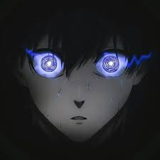

Cette prémiere page web je la considere comme la premiere pierre que je pose afin de batir le futur developpeur fullstack que j'ambitionne de devenir.
Alors Gomycode m'aide et m'accompagne dans la realisation de cet objectif, de cet ideal que je conçoit...Alors comme on le dit souvent petit à petit l'oiseau fait son nid.
Anime sama
Voici une image d'un animé que j'aime bien qui un peu le monde dans lequel nous somme et que nous devons etre obsédé par le faite de toujours s'amelioré afin d'exceller dans le domaine que nous somme. 